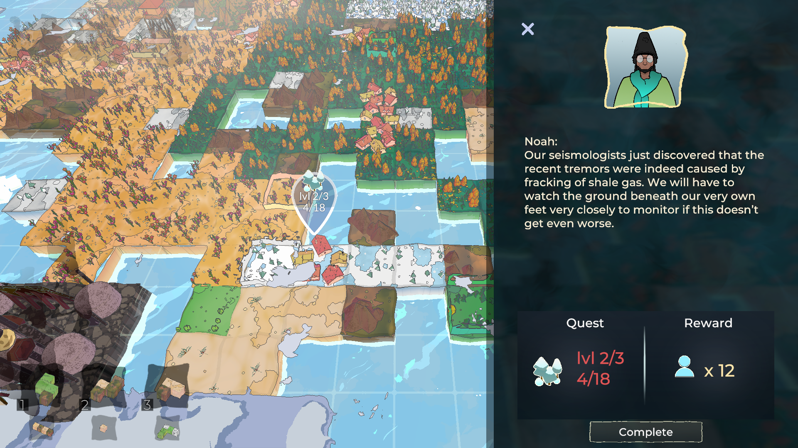

Gaslit (2023)

This game can be played on https://fossielvrijnl.itch.io/gaslit.
At the request of Fossielvrij NL and in collaboration with a small team of artists and developers from the HKU Univeristy of Arts, I developed a casual game that introduces the player to the threat of the LNG industry to local communities. Time granted for this project was four months.
The player places tiles in the world to build a world, completing requests of communities scattered around the world by connecting landscapes of the same type. After some turns, an LNG terminal will appear and destroy part of the land. Gas fields will continue appearing and expanding, with pipelines connecting them to the terminals. This breaks up landscapes, which in turn makes quests harder to complete. The expansion of gas fields can also destroy communities, and if this happens too many times the player loses the game. The game has a scaling difficulty, such that the gas industry becomes more aggressive as more turns go by.
A Gaslit world is fully serializable and the player's progress is saved whenever they open the main menu, close the game, or when a set number of turns passes. All quests, upgrade tile locations, moves by the gas industry, and decorative objects use a seed randomly generated at the start of the game and saved to the file. To give a concrete example, this means the same community always has the same needs on the same save file — even if the community was not yet visible when the game last saved.
The game was developed in close collaboration with Fossielvrij NL by following Scrum guidelines, with a product increment delivered every two weeks to gather feedback and adjust our approach where necessary.
Feel free to contact me if you want to chat! Send me an email at mina.spijk@sindarin27.net.